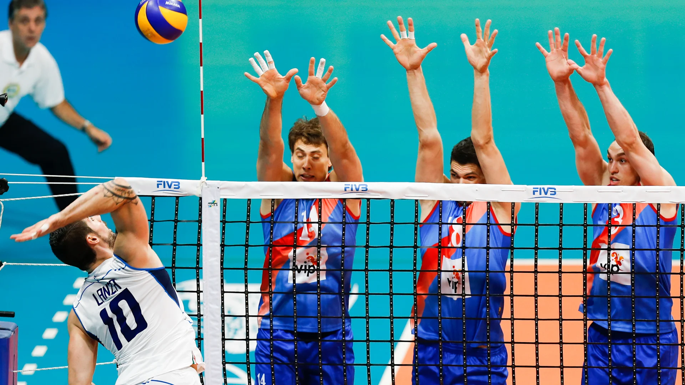

Passing, setting and spike
- Pass: The initial contact made by a player to control the incoming serve or hit.
This is typically executed using the
forearms and is crucial for setting up the next play.
- Set: The second touch of the ball, often performed with the fingertips to position
it for a spike. A well-executed set
creates scoring opportunities for the team.
- Spike: The powerful downward hit delivered by an attacking player to send the ball
forcefully into the opponent's court.
Timing and technique are essential for a successful spike.